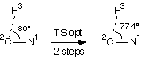

Eigenvector Following with the Berny Algorithm
In the region of correct negative curvature, that is, in the vicinity of the actual
transition state, one can use a local searching method to optimize the transition state structure.
In order to work at all, it is therefore mandatory to provide a reasonable starting
structure, which might either be obtained by guessing well or by a series of
constrained optimizations (relaxed potential energy scans). Taking the isomerization
of HCN to CNH again as an example, we could take the structure of highest energy along
the hydrogen migration pathway and search from there using a local gradient method:
#P HF/6-31G(d) opt=(Z-Matrix,ts,calcfc,noeigen)
HCN to CNH isomerization ts opt, HF/6-31G(d)
0 1
N1
C2 1 r2
H3 2 r3 1 a3
r2=1.16868
r3=1.14549
a3=80.0
|
| 
|
The transition state optimization (ts) is specified here
in terms of an internal coordinate system (Z-Matrix) and
is based on a Hessian matrix calculated at the first point of the optimization process
(calcfc). As more than one negative eigenvalue might
appear in the Hessian matrix during the optimization procedure, we turn off checking
the eigenvalues with noeigen. Explicit calculation
of the Hessian matrix at the beginning of the optimization procedure is expensive, but
necessary in transition state optimizations. That the second derivatives are actually
calculated for all structural parameters can be seen at the beginning of the output file:
----------------------------
! Initial Parameters !
! (Angstroms and Degrees) !
---------------------- ----------------------
! Name Value Derivative information (Atomic Units) !
------------------------------------------------------------------------
! r2 1.1687 calculate D2E/DX2 analytically !
! r3 1.1455 calculate D2E/DX2 analytically !
! a3 80.0 calculate D2E/DX2 analytically !
------------------------------------------------------------------------
After each geometry optimization step the output file contains the current
Hessian matrix, its eigenvalues, as well as the corresponding eigenvector:
Eigenvalues --- -0.21059 0.32009 1.24219
Eigenvectors required to have negative eigenvalues:
r2 r3 a3
1 -0.01659 -0.21851 0.97569
In this very simple case containing only three structural variables, there is
indeed only one large and negative eigenvalue, the corresponding eigenvector
being dominated by the angle a3. Transition state searches will usually only work
if there is at least ONE negative eigenvalue. Multiple negative eigenvalues will not be a
problem as long as one of these is significantly larger than all the others.
The optimization algorithm follows the most negative (largest) eigenvalue in the
optimization process.
With the derivative information in hand, the Berny algorithm steps into the supposedly
correct direction uphill, at the same time lowering the energy gradient. For the
new structure, a new Hessian is obtained using the previous Hessian and gradient information
of the last points. This updating scheme is usually sufficient to lead to a successful
transition state optimization within a small number of optimization cycles. If, however,
the optimization is not successful after 10-15 optimization cycles while
the structure of the system has changed considerably, a completely new Hessian
should be generated by restarting the optimization with calcfc.
In the current case, the optimization takes only two steps until
the default convergence criteria are fulfilled and the transition state is found
with a bond angle of A(H-C-N)=77.4424 degrees, bond distances R(C-N)=116.92 pm and
R(H-C)=115.46 pm, and an HF/6-31G(d) total energy of -92.7919533 Hartree. Relative to the respective
HCN ground state with R(C-N)=113.25 pm, R(H-C)=105.90 pm, and a total energy of
-92.8751975 Hartree, this represents an activation energy of +218.6 kJ/mol.
This system can also be used to demonstrate the importance of a good starting point for the
transition state search. If the search is initiated from a bond angle of a3=90.0 instead of
a3=80.0, the starting point is located further away from the actual transition state
at a3=77.4424 degrees. Using this starting point, the transition state is located after
four optimization cycles. Choosing larger initial bond angles of 100.0 or 110.0 degrees
leads to even longer transition state searches of five or six steps.
In many cases an approximate transition state structure (and thus a good starting
point for the transition state optimization) cannot be generated using the scanning
strategies. This may either be too costly or due to the fact that the reaction path
is described by more than one structural variable. In this situation it is desirable to
generate a starting structure for the transition state optimization using a constrained
optimization. The following example shows how the hydrogen migration transition state in
HCN can be located following this strategy.
%chk=/scratch/test1.chk
#P HF/6-31G(d) opt=(Z-Matrix)
HCN to CNH isomerization ts opt, HF/6-31G(d)
first do partial optimization
0 1
N1
C2 1 r2
H3 2 r3 1 a3
r2=1.16868
r3=1.14549
a3=80.0 F
--Link1--
%chk=/scratch/test1.chk
#P HF/6-31G(d) opt=(Z-Matrix,ts,calcfc,noeigen,nofreeze)
geom=check guess=read
HCN to CNH isomerization ts opt, HF/6-31G(d)
now do full ts optimization
0 1
|
|
|
The first part of this compound job will perform a partial geometry optimization
in the Z-Matrix coordinates given in the input file, freezing the bond angle a3 to a
value of 80.0 degrees. In the second job step the preoptimized geometry is retrieved
from the checkpoint file and the constrained bond angle is freed up using the
nofreeze option of the opt
keyword. This is reflected in the output file at the point of geometry retrieval:
Z-Matrix taken from the checkpoint file:
ztest12.chk
Charge = 0 Multiplicity = 1
N
C,1,r2
H,2,r3,1,a3
Variables:
r2=1.16868
r3=1.14549
Constants:
a3=80.
Recover connectivity data from disk.
Any frozen variables have been unfrozen.
Should there be more than one frozen variable then all of these constraints will be
lifted at this point. The other keywords specify a transition state optimization after initial
calculation of the Hessian. The transition state located in this fashion is identical
to the one found before. The same sequence of steps can be performed in redundant
internals using the following compound job:
%chk=/scratch/test1.chk
#P HF/6-31G(d) opt=AddRed
HCN to CNH isomerization ts opt, HF/6-31G(d)
first do partial optimization
0 1
N1
C2 1 r2
H3 2 r3 1 a3
r2=1.16868
r3=1.14549
a3=80.0
1 2 3 80.0 F
--Link1--
%chk=/scratch/test1.chk
#P HF/6-31G(d) opt=(ts,calcfc,noeigen,AddRed)
geom=check guess=read
HCN to CNH isomerization ts opt, HF/6-31G(d)
now do full ts optimization
0 1
1 2 3 80.0 A
|
|
|
last changes: 16.10.2004, HZ
questions & comments to: zipse@cup.uni-muenchen.de